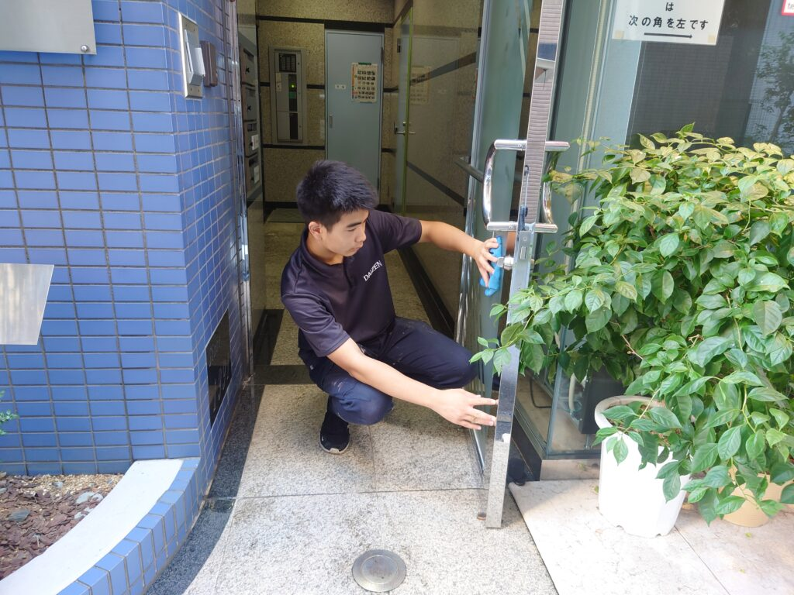
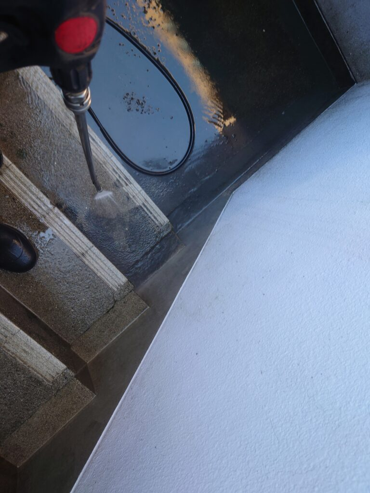
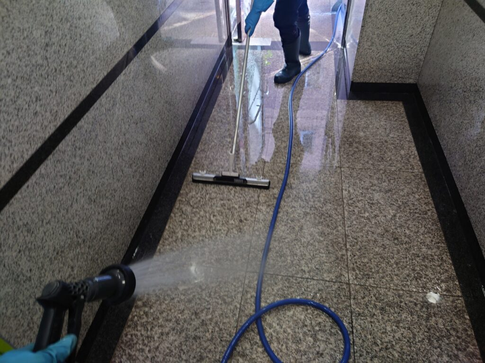

東京都港区のテナントビル様 外階段の高圧洗浄をしました!



港区の5階建てテナントビル様の定期清掃をしました。定期清掃が2か月に一度で、外階段は半年に一度です。テナントさんの出入りと夏場の高温環境下で秋口の定期清掃はかなりの汚水が出ました。外階段は年に3回以上の高圧洗浄がオススメです。
年末にテナントビル様の特別清掃で、照明器具分解清掃、外階段高圧洗浄クリーニング、敷地周辺大掃除清掃、などの大掃除清掃のご要望を沢山承っております。テナントビル様は、複数のお客様が出入りするために、床面、階段面、照明器具、エントランスエリアなどが特に汚れやすく、またご来客のお客様にそれら汚れが目に付きやすい事もあり、特別清掃が必要なケースが多いです。DAIZENクリーニングメソッドを用いた特別清掃でしっかり一年の汚れをクリーニングして輝きを取り戻せます。ぜひ、DAIZENの特別清掃をお試し下さい。